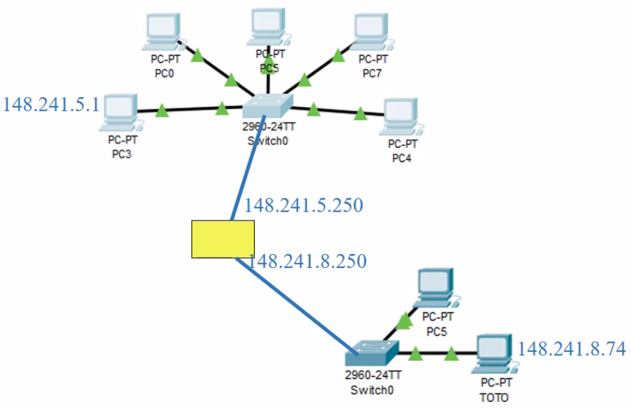

En este caso, la direccion IP 148.241.8.74 no esta en el grupo 1 por que la direccion de red es diferente de la direccion IP al aplicar la mascara de subred del grupo 1. Tiene que comunicarse por la puerta amarilla esa.
